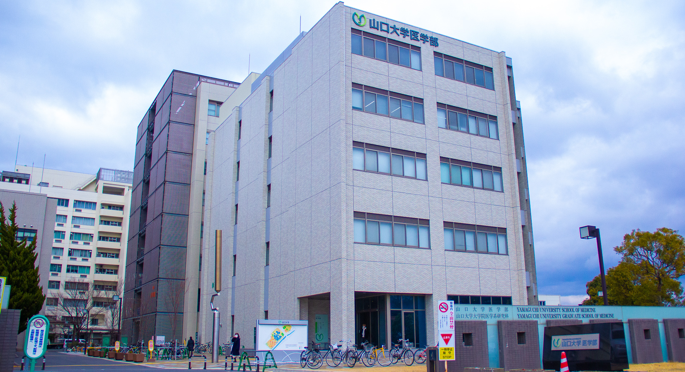
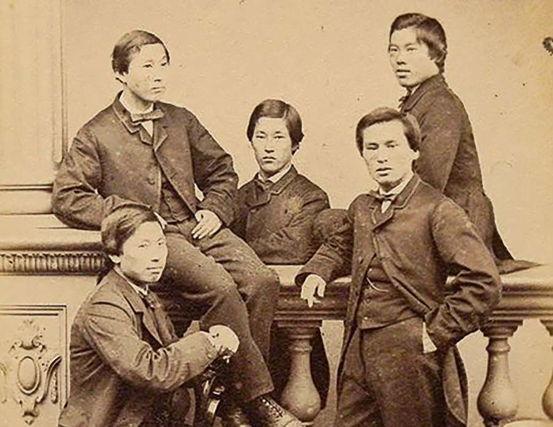

山口大学医学部医学科 学士編入生有志の会
ホーム
活動記録
メンバー
写真
記事

山口大学医学部医学科 学士編入生有志の会ついて
おもしろきこともなき世を面白く
すみなしものは心なりけり
“異なるキャリアを歩んできた人たちの繋がりが価値観の広がりに繋がるのではないか”という想いから設立されました。
大それたことをいうとこんな感じですが、“学士っていろんな人いるし、縦の繋がりをつくったら面白いんじゃない？”ってぐらいの気持ちで始めました。
このHPでは、私たちが感じた“学士編入の面白さ”を少しでも共有できていけたらなと思っています。
E-mail:
※学士編入学試験に関する質問・相談は一切受け付けておりません
Link: 山口大学医学部・医学系研究科

長州五傑（長州ファイブ）
お知らせ
2022.04.11 主に２年生の女子生徒を対象に、キャリアを考える会を開催しました。
2022.03.26 令和3年度卒業の堤春菜が、令和３年度学長表彰の（学業成績優秀者の部）として推薦され、審議の結果、表彰者に決定されました。
2022.02.26 山口大学医学部学士編入生有志の会のホームページを開設しました。
2022.02.09 学年の壁を超えて、学士編入生の上級生が2年生のテュートリアル実験に被験者として参加してくれました。
2022.01.11 編入2年生の才川優輔が第2回AI勉強会を開催しました。
2021.12.18 令和4年度学士編入学試験合格者への説明会を行いました。
2021.12.17 編入6年生の追いコンを行いました。
2022.12.09 編入2年生の才川優輔が第1回AI勉強会を開催しました。
© 2022 山口大学医学部医学科学士編入生有志の会.
TOP